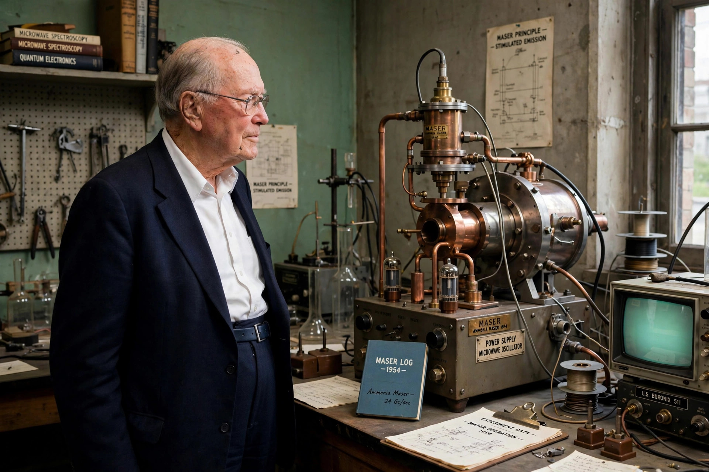

| Born | 28 July 1915 Greenville, South Carolina, United States |
|---|---|
| Died | 27 January 2015 (aged 99) Oakland, California, United States |
| Alma mater | Furman University, Duke University, Caltech |
| Known for | Invention of the maser and laser |
| Awards | Nobel Prize in Physics (1964) Templeton Prize (2005) |
| Institutions | Bell Labs, Columbia University, MIT, UC Berkeley |
Charles Hard Townes (28 July 1915 – 27 January 2015) was an American physicist. He worked on the theory and application of the maser, for which he obtained the fundamental patent, and other work in quantum electronics associated with both maser and laser devices. He shared the 1964 Nobel Prize in Physics with Nikolay Basov and Alexander Prokhorov.
After wartime work on radar at Bell Laboratories, Townes joined Columbia University, where in 1951 he conceived a way to produce coherent microwave radiation using excited ammonia molecules. By 1953–54 he and his students James Gordon and Herbert Zeiger had built the first working maser (microwave amplification by stimulated emission of radiation). Townes and Arthur Schawlow then showed in 1958 how the principle could be extended to optical frequencies, laying the theoretical groundwork for the laser, first demonstrated by Theodore Maiman in 1960.
After serving as provost of MIT, Townes moved to the University of California, Berkeley, in 1967. There he turned to astrophysics: his group detected the first complex molecules (ammonia and water) in interstellar space and pioneered infrared spatial interferometry, measuring stars near the galactic centre and helping establish the presence of the supermassive black hole there. A devout Christian, Townes wrote extensively on the convergence of science and religion and received the Templeton Prize in 2005. He remained scientifically active into his late nineties and died in 2015 aged 99.